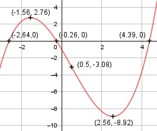

Aufgabe 40 f(x) = (1/3)x3 - 0,5x2 - 4x - 1 f'(x) = x2 - x - 4, f''(x) = 2x - 1, f'''(x) = 2 Definitionsbereich: -∞ < x < ∞ Wertebereich: -∞ < f(x) < ∞ Asymptoten: - Symmetrie: - Nullstellen: (1/3)x3 - 0,5x2 - 4x - 1 = 0 Wertetabelle: -4 -3 -2 -1 0 1 2 -14,3 -2,5 2,33 2,17 -1 -5,17 -8,33 3 4 5 -8,5 -3,67 8,17 Vorzeichenwechsel zwischen -3 und -2 --> Nullstelle gewählt x01 = 2,5 Vorzeichenwechsel zwischen -1 und 0 --> Nullstelle gewählt x02 = -0,3 Vorzeichenwechsel zwischen 4 und 5 --> Nullstelle gewählt x03 = 4,3 Newtonsches Näherungsverfahren: f(x0) x1 = x0 - ------- f'(x0) (1/3)*(-2,5)3-0,5*(-2,5)2-4*(-2,5)-1 x1 = -2,5 - -------------------------------------- (-2,5)2 - (-2,5) - 4 x1 = -2,5 - (-0,14) = 2,64 (1/3)*(-0,3)3-0,5*(-0,3)2-4*(-0,3)-1 x2 = -0,3 - -------------------------------------- (-0,3)2 - (-0,3) - 4 x2 = -0,3 - (-0,04) = -0,26 (1/3)*(4,3)3-0,5*(4,3)2-4*(4,3)-1 x3 = 4,3 - ----------------------------------- (4,3)2 - (4,3) - 4 x3 = 4,3 - (-0,09) = 4,39 N1(-2,64|0), N2(-0,26|0), N3(4,39|0) Schnittpunkt mit der y-Achse: (1/3) * 03 - 0,5 * 02 - 4 * 0 - 1 = -1 Sy(0|-1) Extrempunkte: x2 - x - 4 = 0 p, q - Formel: p = -1, q = -4 x1,2 = x1,2 = 0,5 ± x1,2 = 0,5 ± x1,2 = 0,5 ± 2,06 x1 = 2,56, f(2,56) = (1/3) * (2,56)3 - 0,5 * (2,56)2 - - 4 * (2,56) - 1 = -8,92 x1 = -1,56 f(-1,56) = (1/3) * (-1,56)3 - 0,5 * (-1,56)2 - - 4 * (-1,56) - 1 = 2,76 f''(2,56) = 2 * 2,56 - 1 > 0 --> Tiefpunkt (2,56|-8,92) f''(-1,56) = 1 * (-1,56) - 1 < 0 --> Hochpunkt (-1,56|2,76) Wendepunkt: 2x - 1 = 0 |+1 2x = 1| :2 x = 0,5, f(0,5) = (1/3) * (0,5)3 - 0,5 * (0,5)2 - - 4 * (0,5) - 1 = -3,08 f'''(0,5) ≠ 0 --> Wendepunkt (0,5|-3,08) Graph:
